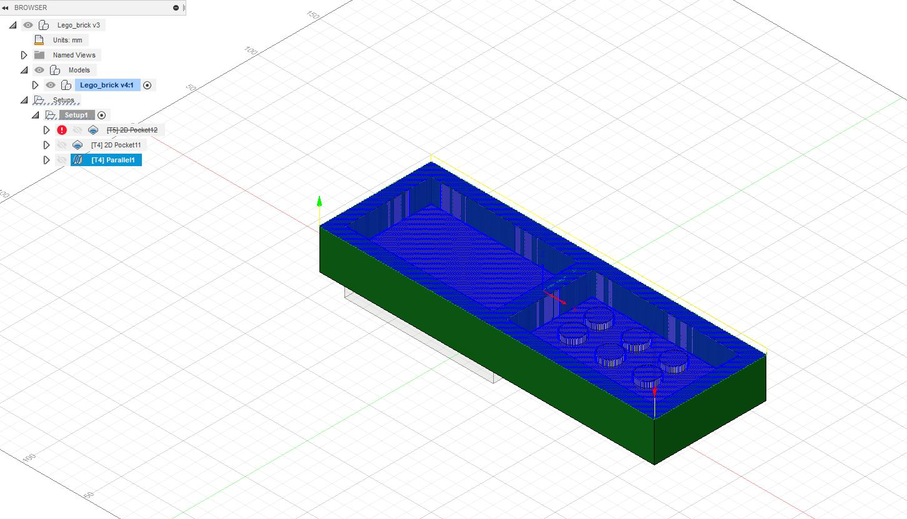

The design of the model.
1. Designing the model
Another member of the group,Ísak Ernir Sveinbjörnsson, designed the 3D model. You can find the procedure on his website.
2. Making the inital setup.
We started by defining the orientation of the model, selecting the proper operation type (milling) and picking the axis of the 3D model.
The inital setup

We then proceded to set to mode in the stock section to "Relative size box" and the stock offset mode to "No additional stock".
The result being:

3. Defining the roughing toolpath
The first toolpath to be defined is the roughing toolpath that carves out a rough representation of the model. We used a stock 2mm diameter tip and left the Feed & Speed settings at default values.

We then defined the geometry that represents the model. This took a lot of trial and error to get right since it is very important to only select the faces of the object you wish to cut out and the order of the selection is the order in which it is cut out.
The top and bottom heights are then defined as the model top and bottom.

Fusion 360 then calculated the toolpaths for us.

4. Making the finishing toolpaths
After the roughing toolpaths were done we proceded to make the finishing toolpaths. we decided to go with the "Paralell" finishing.

The tolerance was defined as 0.1mm and we added perpendicular Passes in order to get some parts that were not being milled properly.
The top and bottom heights are then defined as the model top and bottom.

Here you can see the resulting paths of the finishing toolpath.
5. The simulation.
To simulate the toolpaths we right clicked the "setup1" tab and choose "simulate" the resulting video of the simulation is here:
The Fusion 360 file, can be found here. Github link to model.
Designing the 3D model.
Another member of the group, Ísak Ernir, made the 3D model of the LEGO brick. A link explaining the procedure can be found here.